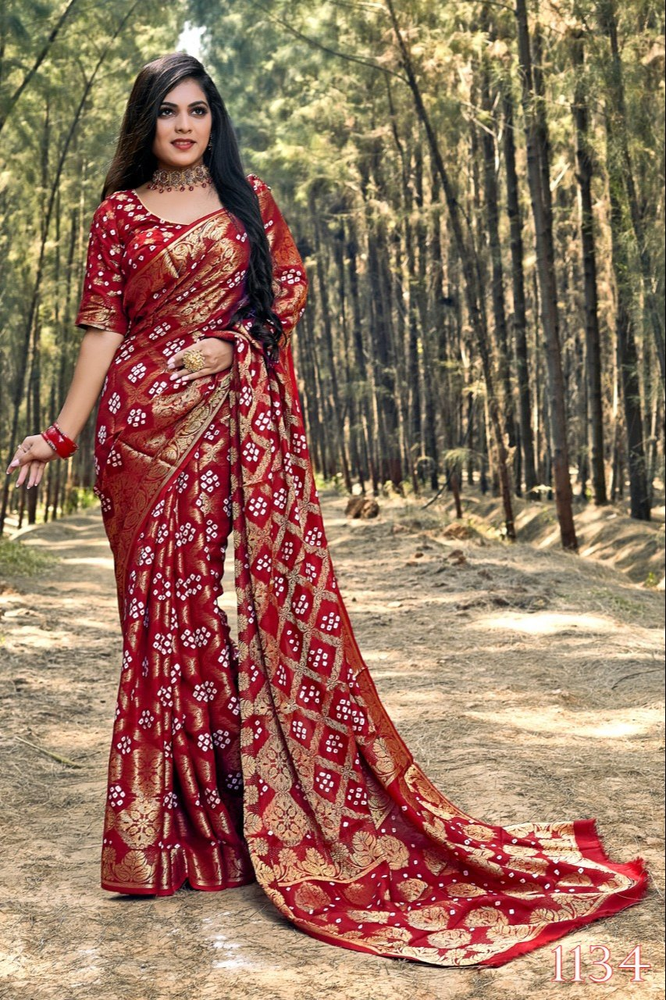

An eminent geographical indication, Bandhani sarees find their home in the state of Gujarat.
Bandhani is an ancient Indian tie-dye technique that involves tying small knots in fabric and then dyeing it. The term "Bandhani" comes from the Sanskrit word "Bandh", which means "to tie". The earliest evidence of Bandhani dates back to the Indus Valley civilization, around 4000 B.C. . The most common type of Bandhani dots can be seen in the 6th century paintings of the Buddha's life on the wall of Cave at Ajanta. Bandhani is thought to have originated in the Indian state of Gujarat around 5,000 years ago.
The fabric used for making Bandhani sarees and dupattas are loosely woven silk called Georgette, or cotton known as Malmal. The knots are tightly tied, and the rest of the fabric is dyed in multiple stages. This leaves the knots undyed and hence a beautiful flower-like pattern appears all over the cloth as a design.
